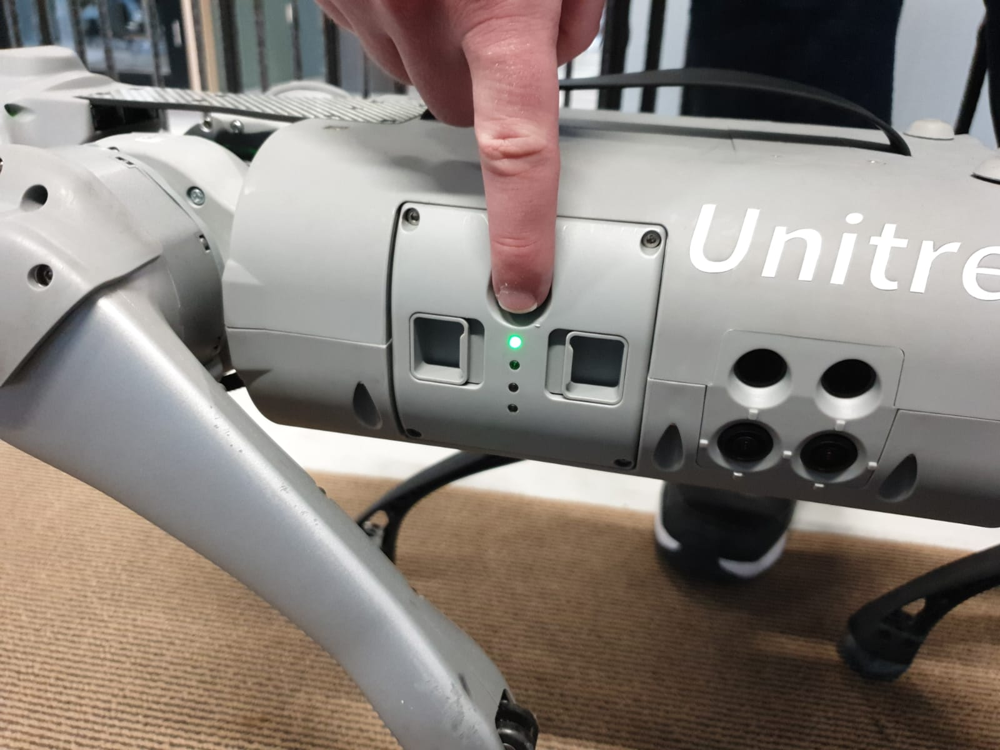

Tactic: Disturbance
Technique: Physically Power Off Or Reset
Disabling the target robot is less dangerous than the attacker having total control over the robot, but can be an effective technique depending on the context nonetheless. Robot's might contain an accessible on/off switch or powerbutton that can be pressed to shutdown the robot.
Mitigations
This technique can be prevented by not implementing any kind of hardware switch or button that starts the shutdown sequence on the robot. Incase it has to be added as an failsafe it's recommended to make the switch or button hard to access.
Detections
The robot itself powering off is fairly obvious. One could have a health check service that pings the robot periodically to see if it is still available, and if not, it may have been powered off.
Ethical Considerations
Physically powering of a robot, might put someone in danger. When the environment is unsafe or the robot is capable of doing harm, one should be careful when approaching the robot and when necessary wear safety equipment. One should also consider using an other robot or devices to power off the target so no human can be harmed during the process. When it is only possible to power off or reset a robot by a human and the robot or environment is dangerous, only somebody with experience should do this job and if necessary, others should be on a safe distance or evacuated from the location.
Documented incidents with autonomous robots
During the pentest's on the Jackal robot from Clear Path Robotic and on the Unitree Go1 from Unitree, we were able to access the powerbutton and start the shutdown sequence of the robots.
